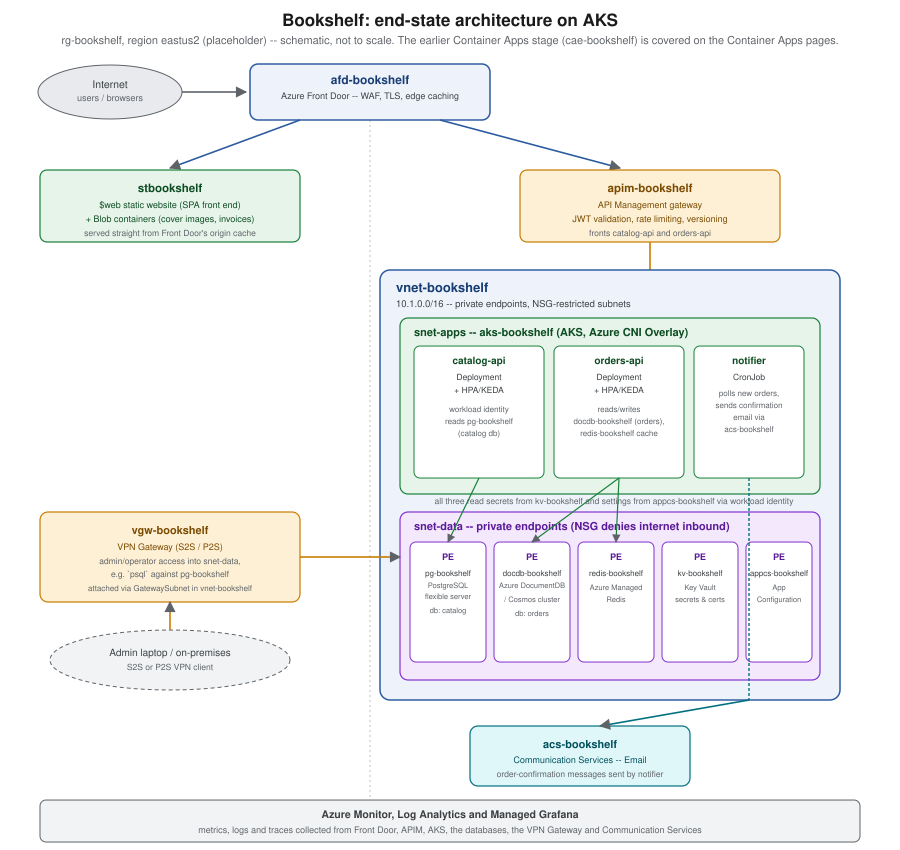

Azure
|
This content was generated with the assistance of AI and should be verified against the official documentation before being relied on in production. |
Welcome to the Azure reference. It documents Microsoft Azure for practitioners who work from the Azure portal
and the Azure CLI — provisioning resources, wiring them together, and operating what results — rather than
from the perspective of an AZ-900-style conceptual overview. Examples across this section target Azure CLI
version 2.90.0, Bicep version 0.47.16 and the Azure Developer CLI (azd) version 1.34.2; this baseline was
re-verified as current on 2026-09-27, and each page also names the extension or preview-feature versions it
specifically depends on, since Azure ships new capabilities to individual services on its own schedule.
Coming from AWS? See the AWS (Amazon Web Services) section, which includes a service-mapping table to Azure, and the Google Cloud section.
What’s covered
Foundations
-
Cloud Concepts — IaaS/PaaS/SaaS, the shared responsibility model, and the vocabulary the rest of this section assumes.
-
Getting Started with Azure — creating an account, the free tier, and installing and signing in with the Azure CLI, Bicep and
azd. -
Azure Global Infrastructure — regions, availability zones and datacenters, and how they shape resiliency decisions.
-
Resource Organization — management groups, subscriptions, resource groups, tags and naming conventions, applied to
rg-bookshelf. -
Identity and Access — Microsoft Entra ID, RBAC role assignments, managed identities and workload identity, the mechanisms every later page’s
--assign-identityandaz role assignment createcalls build on. -
Infrastructure as Code — Bicep modules and
azdtemplates for provisioning Bookshelf repeatably, instead of one-offazcommands.
Compute
-
Choosing a Compute Service — a decision guide across VMs, Container Apps, App Service, Functions and AKS.
-
Azure Container Registry —
acrbookshelf, image builds, and pulling images by managed identity. -
Container Apps — deploying
catalog-apitocae-bookshelf, environments, ingress and revisions. -
Container Apps: Scaling, Jobs and Dapr — scale rules, the
notifierjob, and the Dapr sidecar. -
App Service and Azure Functions — the PaaS and serverless alternatives to Container Apps.
-
AKS Clusters — creating
aks-bookshelfitself: node pools, networking and cluster-level autoscaling. -
Deploying Microservices on AKS — moving
catalog-api,orders-apiandnotifieronto that cluster with manifests, Helm and the Gateway API.
Storage and CDN
-
Storage Accounts —
stbookshelf, redundancy options and access tiers. -
Blob Storage — containers, lifecycle management, and serving Bookshelf’s static front end from
$web. -
Front Door and CDN —
afd-bookshelf, WAF rules and edge caching in front of both the static site and API Management.
Managed databases
-
Managed Databases on Azure — a survey of Azure’s managed database options and how Bookshelf picks between them.
-
Azure SQL — Azure SQL Database and Managed Instance, for workloads that need them instead of PostgreSQL.
-
PostgreSQL and MySQL on Azure —
pg-bookshelf, the flexible server tier, and wherecatalog-apipersists its catalog. -
Cosmos DB and Azure DocumentDB —
docdb-bookshelf, and whereorders-apipersists its orders. -
Redis and Partner Databases on Azure —
redis-bookshelf(Azure Managed Redis) and the partner-hosted database marketplace offerings.
Security and runtime configuration
-
Key Vault and Secrets —
kv-bookshelf, secret and certificate management, and RBAC versus access policies. -
Runtime Configuration —
appcs-bookshelf, feature flags, and Kubernetes ConfigMaps/Secrets as the AKS-side equivalent.
Networking, gateways and VPN
-
Virtual Networks —
vnet-bookshelf, subnets, NSGs and private endpoints for the data-tier resources. -
Gateways and Load Balancing — Application Gateway, Azure Load Balancer and the Gateway API in front of
aks-bookshelf. -
API Management —
apim-bookshelf, the gateway in front ofcatalog-apiandorders-api. -
VPN Gateway and Hybrid Connectivity —
vgw-bookshelf, the admin path intosnet-data.
Email and integration
-
Email with Azure Communication Services —
acs-bookshelf, and hownotifiersends order-confirmation email. -
Messaging and Integration Services — Service Bus, Event Grid and Event Hubs for the messaging Bookshelf could add next.
Operations, governance and beyond
-
Monitoring and Observability — Azure Monitor, Log Analytics and Managed Grafana watching every resource in the diagram above.
-
Governance and Compliance — Azure Policy, Blueprints' successor, and compliance tooling.
-
Cost Management — budgets, Azure Advisor’s cost recommendations, and right-sizing Bookshelf’s resources.
-
Architecture, Migration and Hybrid Cloud — landing zones, the Cloud Adoption Framework, and migrating existing workloads onto Azure.
-
AI, Data and IoT Services Overview — a survey of the Azure services this section doesn’t otherwise cover.
-
Developer Tools and DevOps — GitHub Actions, Azure DevOps and
azdtying CI/CD back to everything above.
Foundry Tools
The Foundry Tools sub-section is a practical guide to Microsoft’s
prebuilt AI services (formerly Azure AI services and Cognitive Services), run from the foundry-bookshelf resource:
-
Choosing a Foundry Tool (or a Foundry Model) — prebuilt tool vs LLM vs custom model, overlaps resolved, and AWS/Google Cloud equivalents.
-
Resources, Endpoints and Authentication — the Foundry resource, endpoints, keys vs Microsoft Entra ID, and keyless Bicep.
-
Networking, Security and Responsible AI — network rules, private endpoints, customer-managed keys and Limited Access.
-
Pricing, Quotas, Containers and Monitoring — billing units, rate limits, containers and diagnostics.
-
Speech to Text — real-time, fast, batch and LLM speech.
-
Text to Speech and Avatars — voices, SSML, batch synthesis, custom voice and avatars.
-
Speech Translation, Pronunciation Assessment and Other Speech Features — speech translation, Live Interpreter and pronunciation scoring.
-
Voice Live API for Voice Agents — managed speech-to-speech voice agents.
-
Text Translation with Translator — the
2026-06-06API with NMT or LLM targets. -
Document Translation, Custom Translator and Adaptive Translation — documents with layout, and custom terminology.
-
Language: PII, Entities, Language Detection and Health — the core Language features.
-
Language: Sentiment, Summarization, CLU and Question Answering — the legacy features and their LLM alternatives.
-
Vision: Image Analysis and OCR — captions, smart crops and OCR, and their retirement path.
-
Face Detection, Verification and Liveness — Face behind Limited Access, with a KYC example.
-
Document Intelligence: Read, Layout and Prebuilt Models — OCR, layout and Bookshelf’s supplier invoices.
-
Document Intelligence: Custom Models, Classification and RAG Ingestion — custom models, classifiers and Markdown chunking.
-
Content Understanding: Multimodal Analyzers — fields you describe, across documents, images, audio and video.
-
Content Safety, Prompt Shields and Groundedness — moderation and LLM-attack protection.
-
Azure AI Search with Foundry Tools — skillsets, integrated vectorization and agentic retrieval.
-
Using Foundry Tools from Agents (MCP and Toolbox) — MCP servers, templates and function tools.
-
Immersive Reader, Video Indexer and Retired Services — reading aids and the full retirement table.
-
End-to-End Scenarios: Combining Foundry Tools — three complete Bookshelf pipelines.
-
Foundry Tools Cheat Sheet — a one-page printable PDF.
Cheat Sheet — a single-page, printable summary of this section, with a downloadable PDF.
Media Optimization
The Media Optimization page covers media processing on Azure after the retirement of Azure Media Services: Video Indexer for analysis, partner transcoders, self-hosted FFmpeg in Container Apps event-driven jobs, image resizing with Blob Storage, Event Grid and Azure Functions, and delivery with Front Door.
Reading path
Read this section foundations first — accounts, regions, resource groups, identity and infrastructure as code — then compute, where Bookshelf’s services first get deployed. From there, storage and CDN put the static
front end and its assets somewhere durable and fast to serve, and managed databases give catalog-api and
orders-api somewhere to persist data. Security and runtime configuration then centralize the secrets and
settings every earlier page referenced loosely, before networking, gateways and VPN lock the whole thing behind
a private network and a proper API front door. Email and integration wire notifier up to the outside world,
and operations, governance and beyond closes the loop: monitoring, cost, compliance, migration paths and the
developer tooling that ties CI/CD back to everything above.
Running example
Most pages in this section build up one running example, Bookshelf: a small online bookshop with a public catalog, a checkout flow and an order-confirmation email, deployed entirely on Azure. Every resource in it shares one resource group and one naming convention, so a command copied from one page composes with a command copied from another:
| Concern | Name / value |
|---|---|
Resource group |
|
Region |
|
ACR |
|
Container Apps environment |
|
Container Apps |
|
AKS cluster |
|
Storage account (static site + Blob) |
|
Front Door profile |
|
PostgreSQL flexible server |
|
Azure DocumentDB / Cosmos cluster |
|
Azure Managed Redis |
|
Key Vault |
|
App Configuration store |
|
API Management |
|
VPN Gateway / VNet |
|
Email Communication Service |
|
Foundry resource ( |
|
Foundry project |
|
Azure AI Search service |
|
Blob containers for audio, video and documents (in |
|
Vision resource for cover captions ( |
|
Immersive Reader resource (not part of |
|
Bookshelf starts on Container Apps (cae-bookshelf, covered in the Compute group below) and later moves its
three services — catalog-api, orders-api and the notifier job — onto an AKS cluster
(aks-bookshelf), covered in AKS Clusters and Deploying Microservices on AKS.
The figure below shows Bookshelf’s end state, once every group’s pages have been applied: the AKS-hosted
services behind API Management and Front Door, with the databases, secrets and configuration store reached
through private endpoints inside vnet-bookshelf, an admin VPN path, and Azure Monitor watching all of it. It
is not the architecture a reader has running after just the Compute pages — see
Choosing a Compute Service and Container Apps for the earlier,
Container-Apps-only stage.

Related material on this site
Several pages in this section link back to material that already has its own home elsewhere on this site, rather than duplicating it here:
Related pages and open issues cover adjacent ground this section doesn’t: Terraform covers Terraform as an alternative to Bicep for infrastructure as code, and #184 tracks a closer look at API managers, secret managers, and gateways and scaling in the cloud more broadly.
See also Comparing Cloud Providers for a side-by-side comparison of AWS, Azure and Google Cloud.
Bibliography
Requester-provided books, consulted for the practitioner’s angle and exam-style framing only — never the primary source for any command or code example on this section’s pages:
-
Lee, J. Azure Fundamentals (AZ-900) Study Guide: In-Depth Guidance & Practice for Aspiring Cloud Engineers. O’Reilly Media, 2026. ISBN 978-1-098-16782-0. https://www.oreilly.com/library/view/azure-fundamentals-az-900/9781098167813/
-
Carrio Andersson, J. Learning Microsoft Azure: Cloud Computing and Development Fundamentals. O’Reilly Media, 2023. ISBN 978-1-098-11332-2. https://www.oreilly.com/library/view/learning-microsoft-azure/9781098113315/
Official Microsoft Learn documentation, grouped by the same section groups above:
General:
-
Azure documentation hub, Azure CLI reference and its release notes, Bicep documentation, Azure Developer CLI (azd) documentation, the Azure Architecture Center (including its compute and container decision trees), the Azure Well-Architected Framework, the Cloud Adoption Framework, the Azure free account FAQ and the Azure pricing calculator.
Compute:
Storage/CDN:
-
Blob Storage documentation and its smart access tier, Front Door documentation, plus the Front Door classic retirement FAQ and the CDN classic retirement FAQ cited on the pages that migrate off them.
Databases:
Security/config:
Networking/gateways:
Email/integration:
Foundry Tools (the Foundry Tools sub-section; each page also cites the specific page every example derives from):
-
Platform:
-
Security and operations:
-
Speech:
-
Translator:
-
Language:
-
Vision and Face:
-
Document Intelligence:
-
Content Understanding:
-
Content Safety:
-
Azure AI Search:
-
Agents:
-
Other:
-
SDK repositories:
Operations (retirement notices cited across the pages above where a service is being deprecated or replaced):
-
Front Door classic retirement FAQ, CDN classic retirement FAQ, VPN Gateway legacy SKU deprecation, Key Vault access-control-default migration guide and the storage account overview (general-purpose v1 retirement guidance).
Partner documentation, where a page relies on a non-Microsoft managed service or open-source project:
Where this section’s prose and the official documentation disagree, the official documentation wins.